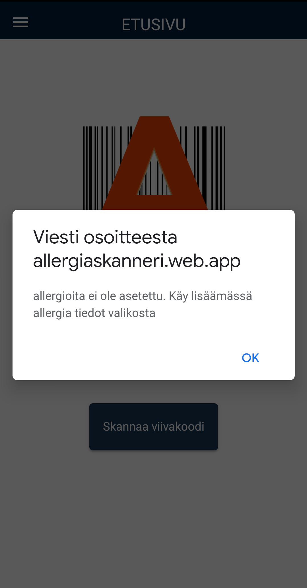
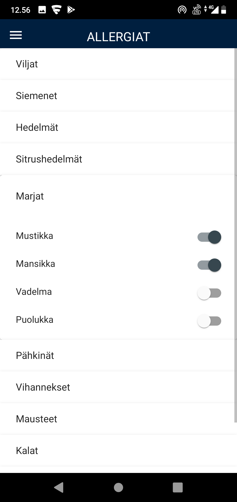
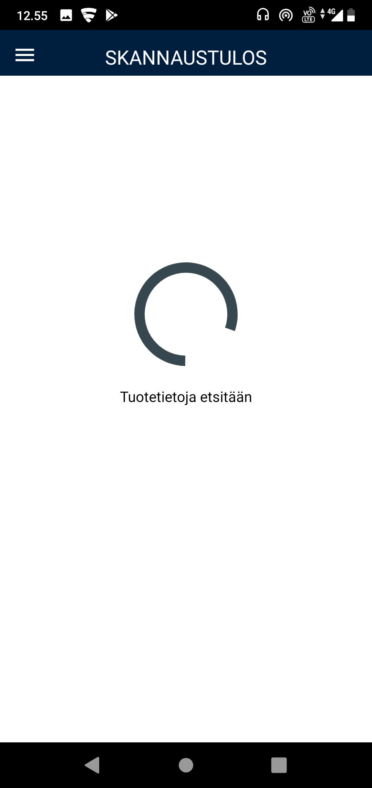
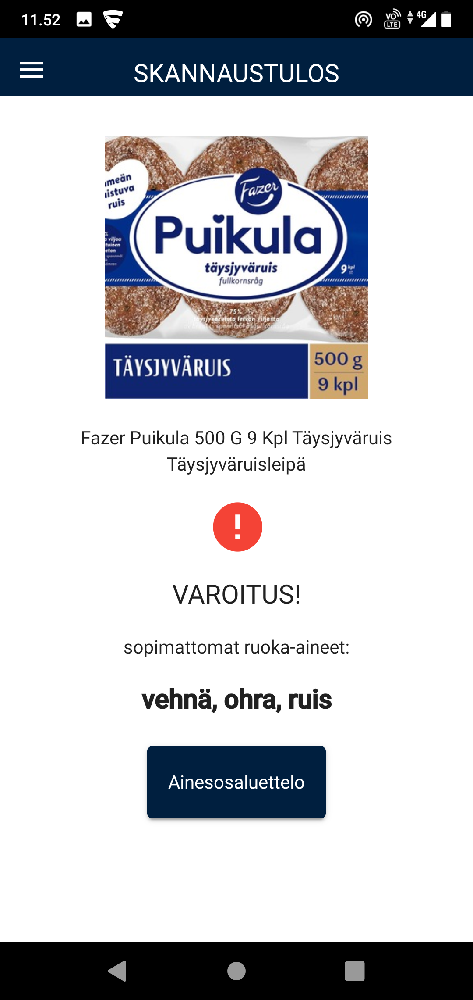
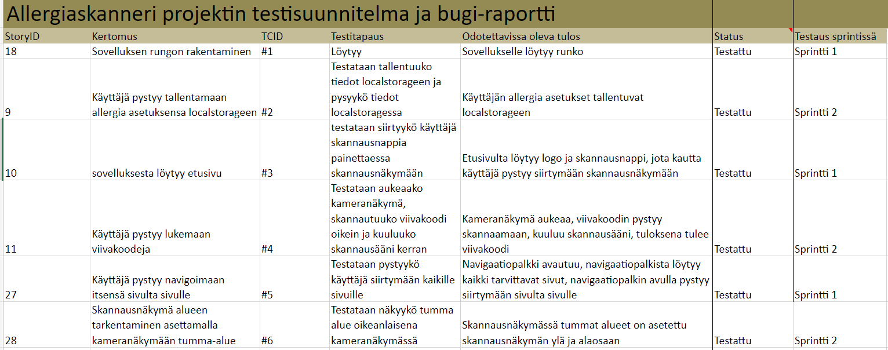
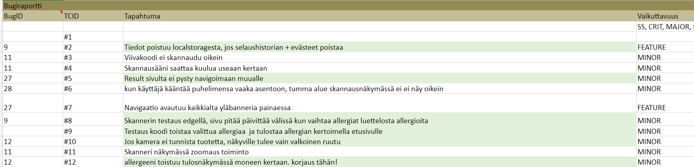

Olen toisen vuoden tietojenkäsittelyn opiskelija, joka tykkää
koodaamisesta ja mallintamisesta. Ticorporaten aikana toimin
päätoimisena koodarina ja sivutoimisena testaajana Allergiaskanneri
projektissa. Allergiaskanneri projektin tarkoituksena oli luoda
sovellus, joka helpottaa sellaisten ihmisten kaupassakäyntiä, joilla on
allergioita, ja/tai erityisruokavalioita. Alla kerron tarkemmin meidän
allergiaskanneri projektista, osaamisestani, sekä työskentelystä.
Hankittu Osaaminen
Git versionhallinta
Git perusteet
GitHubin käyttö
Git-komennot
Angular PWA
Kirjaston peruskäyttö
ymmärrys PWA:sta
Angular 11
Angular perusteet
Komponentit
Servicet
HTML, CSS
Typescript
Angular material
Kirjaston peruskäyttö
Slide togglet
Expansion panel
Progress spinner
Buttonit
Allergiaskanneri projektin aikana opettelin käyttämään Angularia,
Angular-kirjastoja, sekä Githubia, mikä oli alussa hyvin haastavaa.
Projektin edetessä opin kuitenkin käyttämään githubia suhteellisen
hyvin. Yleisimmät komennot tulivat tutuiksi, repositorion luonti
ja Markdown kieli. Projektin aikana käytin myös visual studio codea,
sekä autoin firebasen käytössä
Työskentely projektissa
Projektityöskentely ei ollut minulle entuudestaan tuttua, koska en ole
koskaan aikaisemmin työskennellyt missään projektissa
mukana. Tämän takia en ole koskaan aikaisemmin käyttänyt myöskään
Githubia. Paitsi ohjelmistotuotannon muutamalla tunnilla. Tällöin sain
yleiskäsityksen Scrumista, projektityöskentelystä ja Githubista.
Allergiaskanneri projektin aikana pääsin harjoittelamaan
projektityöskentelyä ja käyttämään Githubia. Projektin aikana opin
ymmärtämään, mitenkä projektityöskentely toimii, ja
mitenkä Githubia käytetään. Alla on muutamia kuvia meidän sovelluksesta.

Alert-ilmoitus
oma työpanos:
Tiedot localstoragesta
Toimintalogiikka

Allergiat-valikko
oma työpanos:
Slide togglet
Local storage systeemi
Lista allergioista
Ulkoasu näkymälle

Latausnäkymä
oma työpanos:
Toimintalogiikka
Ulkoasu näkymälle

Tulosnäkymä
oma työpanos:
Hyväksytty näkymä
Hylätty näkymä
Kuvakkeet
Tuotekuvan haku
Tuotetietojen haku
Ainesosaluettelo
Yäpuolella olevista kuvista saa yleiskäsityksen siitä, mitä olen tehnyt
projektin aikana. Työskentelin mm. allergia-valikon, latausnäkymän,
alert-ilmoituksen ja tulosnäkymän parissa.
Projektin testaus
Toimin Allergiaskanneri projektissa sivutoimisena testaajana, joten
suunnittelin Teemu Huttusen kanssa allergiaskanneri-sovelluksen
testauksen, testauspäivät, sekä kirjoitimme kaikki tarvittavat raportit.
Testauspäiviä varten me suunnittelimme esimerkiksi kaikki kysymykset
valmiiksi, testauspäivien kulu, sekä ohjasimme testauspäivän.
Lisäksi minä tein meidän ryhmän kaikki google forms-lomakkeet.
Alla on kuva meidän testisuunnitelmasta ja bugiraportista.


Koodaus-osio
Toimin allergiskanneri-projektissa päätoimisena koodajana.
Koodaajana korjasin bugeja, loin uutta koodi ja parantelin
sovelluksemme ulkoasua. Alapuolella näkyy allergia-valikoon,
latausnäkymään, alert-ilmoitukseen, tulosnäkymään ja ainesosaluetteloon
tarvittuja koodinpätkiä.
//get allergen states from local storage
getWheat() {
for (let i = 0; i < this.wheat.length; i++) {
const status = JSON.parse(localStorage.getItem(this.wheat[i].id));
if (status === null) { localStorage.setItem(this.wheat[i].id, 'false') }
this.wheat[i].status = JSON.parse(localStorage.getItem(this.wheat[i].id));
//push ALL the allergens into an array
this.addElementToObservableArray(this.wheat[i]);
}
}
getseed() {
for (let i = 0; i < this.seed.length; i++) {
const status = JSON.parse(localStorage.getItem(this.seed[i].id));
if (status === null) { localStorage.setItem(this.seed[i].id, 'false') }
this.seed[i].status = JSON.parse(localStorage.getItem(this.seed[i].id));
this.addElementToObservableArray(this.seed[i]);
}
}
getCitrusfruit() {
for (let i = 0; i < this.citrusfruit.length; i++) {
const status = JSON.parse(localStorage.getItem(this.citrusfruit[i].id));
if (status === null) { localStorage.setItem(this.citrusfruit[i].id, 'false') }
this.citrusfruit[i].status = JSON.parse(localStorage.getItem(this.citrusfruit[i].id));
this.addElementToObservableArray(this.citrusfruit[i]);
}
}
Yläpuolella näkyy alleriat-valikkoon tarvittuja koodinpätkiä.
Allergiat-valikkossa käyttäjä pystyy merkkaamaan omat allergiansa ja
tiedot tallentuvat local storageen. Local storage ei ollut ehkä paras
ratkaisu tietojen tallentamiseen, sillä jos käyttäjä poistaa
selaushistorian ja evästeen puhelimestaan, niin myös allergia-tiedot
poistuvat ja käyttäjä joutuu merkkamaan ne uudelleen. Tämän takia
tietokannan käyttö olisi ollut ehkä järkevämpi.
Tietokannan sijaan me merkkasimme mahdollisia allergioita allergen
serviceen. Listasta tuli aika pitkä ja vain pieni osa niistä on
näkyvillä. (ylin kuva.) Lista on pääasiassa minun tekemä, samoin
categories.component.html tiedosto. Listassa jokaisella allergialla on
oma id, nimi ja status. Aluksi status on false, mutta kun käyttäjä
valitsee jonkun allergian, tämän status muuttuu trueksi ja tieto
tallentuu local storageen. Myöhemmin tallennetut allergia-tiedot haetaan
local storagesta.
Yläpuolella näkyy latausnäkymään tarvitut koodinpätkät. Latausnäkymä
tulee näkyviin silloin, kun tuotetietoja etsitään. Esimerkiksi tuotteen
skannauksen jälkeen. Ulkoasu latausnäkymään löytyy
navigation.component.ts-tiedostosta. Latausnäkymä näkyy vain, jos loader
servicen isloading arvo on totta. Alussa se on asetuttu falseksi. Kun
Foodien tietokantaan otetaan yhteyttä arvo muutetaan trueksi ja kun
tuotetiedot löydetään/ei löydetä, arvo asetetaan takaisin falseksi.
scanner.component.ts
ChechkAllergies(){
let AllergiesFound = [];
for (let i=0; i<localStorage.length; i++)
{
let key = localStorage.getItem(localStorage.key(i));
if(key === 'true'){
AllergiesFound.push(key)
console.log(AllergiesFound);
}
}
if(AllergiesFound.length === 0){
alert('allergioita ei ole asetettu. Käy lisäämässä allergia tiedot valikosta');
}
}
Yläpuolella näkyy alert-ilmoitukseen tarvittu koodinpäpätkä. Käyttäjälle
näytetään alert-ilmoitus, jos hän ei ole valinnut yhtäkään allergiaa
allergia-valikosta.
Yläpuolella näkyy tulosnäkymään tarvituja koodinpätkiä. Tulosnäkymässä
käyttäjälle kerrotaan, onko tuote turvallinen, vai ei. TS-tiedostossa
haetaan tuotetiedot barcode-servicestä subscriben avulla. Observableja
ja subscribea tarvittiin siihen, että tiedot välittyy sovelluksessa
reaaliaikaisesti. Alussa tämä toteutettiin ilman subscribea ja
observableja, mutta me huomasimme, että jos käyttäjä käy muuttamassa
skannauksien välissä allegia-tietojaan, tulosnäkymä näyttää väärän
tuloksen. Lisäksi ts-tiedostossa verrataan tuotetietoja merkattuihin
allergia-tietoihin,jonka perusteella näytetään turvallinen tai ei
turvallinen näkymä.
html-tiedostossa on kaksi ngIf-lausetta. Jos tuotetta ei löydetä,
näytetään teksti "tuotetta ei löytynyt". Jos tuote löydetään näytetään
tuotteen kuva, tuotteen nimi, sekä kerrotaan käyttäjälle onko tuote
turvallinen vai ei. Jos tuote ei ole turvallinen, käyttäjälle näytetään
sopimattomat ainesosat.
Yläpuolella näkyy ainesosaluetteloon tarvitut koodinpätkät.
TS-tiedostossa haetaan ainesosaluettelo, joka näytetään käyttäjälle.
html-tiedostossa on kaksi ngIf-lausetta. Jos, ainesosaluettelo ei löydy,
tällöin näytetään teksti "Ainesosaluetteloa ei löydy". Jos
Ainesosaluettelo löydetään, tällöin näytetään ainesosaluettelo.
Kummassakin näkymässä on myös takaisin-nappi.
Itsearviointi
Lähdin allergiaskanneri-projektiin mukaan aika kokemattomana. En ole
koskaan työskennellyt missään ohjelmistokehitys projektissa mukana,
joten projektityöskentely ja githubin käyttö tuli uutena asiana.
Angularia olen käyttänyt web-sovelluskehitys kurssilla, mutta hyvin
ohjatusti, lähinnä seurannut opetusvideoita.
Allergiaskanneri-projektin aikana pääsin itse käyttämään angularia ja
kokeilemaan erilaisia asioita. Itse kokeillessa jouduin miettimään,
kuinka tietyt toiminnallisuudet saadaan toteutettua ja kokeilujen kautta
myös ymmärrys angularista kasvoi. Koen osaavani käyttää nyt angularia
suhteellisen vaivattomasti, vaikka observablet ja subscribet
tuottavatkin hieman tuskaa monimutkaisen rakenteen takia.
En kuitenkaan koe olevani täydellinen koodari Allergiaskanneri projektin
jälkeen, mutta ainakin pientä kehitystä on tapahtunut. Pystyn
kirjoittamaan esimerkiksi tutoriaalien perusteella koodia, etsimään
esimerkkejä googlesta, sekä ymmärrän aika hyvin muiden kirjoittamaa
koodia. Lisäksi pystyn jonkun verran tuottamaan omaa koodia. Tämän
projektin aikana oikeastaan jouduin aika paljon itse miettimään, mitenkä
tietyt asiat saadaan ratkaistua, kun googlesta ei meinannut löytyä apua.
Minua kuitenkin huolestuttaa, ettei kirjoittamani koodi ole aina
arkitehtuurilta oikeanlaista koodia.
Koen kuitenkin olevani paljon valmiimpi seuraavaan projektiin, sillä
Allergiaskanneri-projektin aikana opin ymmärtämään, kuinka projektin
parissa työskennellään ja opin käyttämään Githubia. Kehityin myös
koodaamisessa saadessani apua muilta ryhmäläisiltäni.